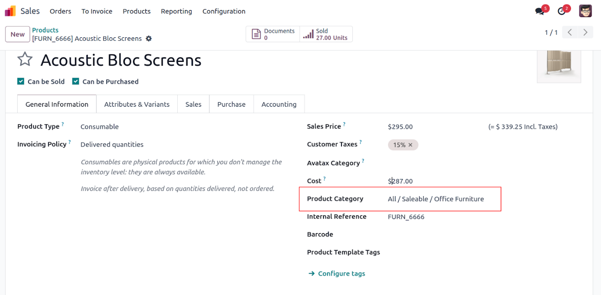
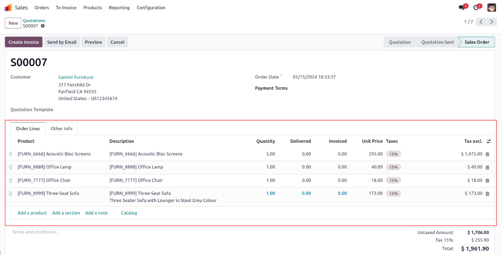

فیلدهای رابطهای (Relational fields)#
فیلدهای رابطهای برای ایجاد ارتباط بین مدلها استفاده میشوند: Many2one, One2many, Many2many.
Many2one (ارتباط چند به یک):
category_id = fields.Many2one('product.category', string='Product Category')
One2many (یک به چند):
order_lines = fields.One2many('sale.order.line', 'order_id', string='Order Lines')
Many2many (چند به چند):
tag_ids = fields.Many2many('product.tag', 'product_tag_rel', 'product_id', 'tag_id', string='Tags')
نمونه تصاویر:

